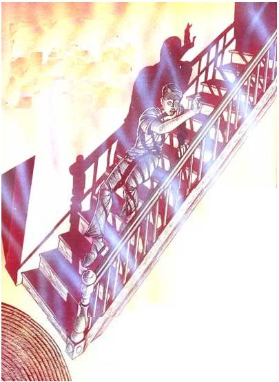
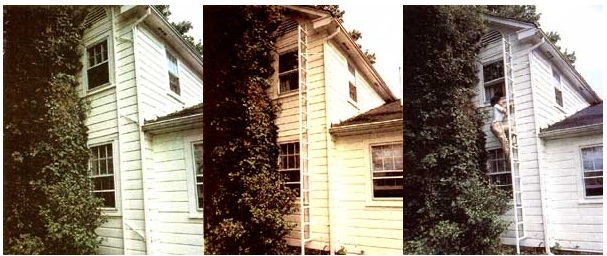
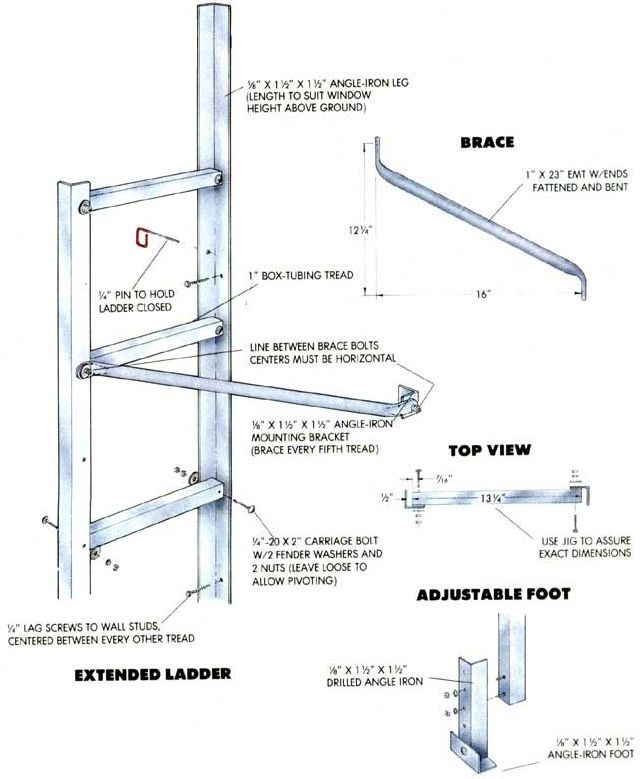

A SMOKE DETECTOR CAN PROVIDE VITAL EARLY WARNING TO PROTECT YOU AND YOUR FAMILY ...the perils of a home conflagration
EACH YEAR, BETWEEN 5,000 and 6,000 people in the U S. die as a result of structural fires, ranking it fourth as a cause of accidental death. Only car accidents, falls, and drowning claim more lives. Of these fatalities, more than 80% occur in one- and two-family homes.
Happy, there are significant fewer fire deaths today than there were 10 years ago-this despite more than a doubling in property losses owing to fire during the same period. There's a simple explanation for the declining number of deaths in the face of increasing dollar losses. It's called the smoke detector.
There are two basic types of smoke detectors. An ionization unit contains a small amount (less than one microcurie) of a radio-active substance, such as americium-241. The decaying material fills one or two sampling chambers with ions of nitrogen and oxygen, which support a very small electrical current that keeps the alarm silent. Should smoke enter the chamber(s), however, the ions attach to the particles, and the current path breaks down, sounding the alarm.
Photoelectric smoke alarms rely on light scattering to detect smoke. As long as light emitted periodically by a diode (LED) fails to strike a photocell set out of line of the light path, the alarm stays off. But if smoke enters the light-tight chamber, the particles will reflect and refract the light onto the photocell, sounding the alarm.
Each type has its advantages. Because it depends on an ion-strewn current path, the ionization detector responds better to smoke consisting of numerous small (less than one micron) particles-typical of the emissions from a blazing fire. It will, for example, respond quickly to toxic gases given off by certain burning plastics. Unfortunately, it's also quite sensitive to the fumes produced in a busy kitchen. A photoelectric detector responds more quickly to the large (greater than one micron) particles produced by smoldering fires. It will warn earlier of the sort of fire caused by a careless smoker or by spontaneous combustion, And it's much less prone to sound nuisance alarms. Its main failing is a comparative insensitivity to fumes and to black particles, which absorb rather than reflect light.
If you had to pick between the two, the photoelectric detector would probably be the better first choice. According to the National Fire Protection Association, nearly all house fires give off dense smoke before bursting into flames or creating toxic fumes. In some instances, the lag time between smoke and a hazardous atmosphere may be as little as one minute, so early warning is vital.
Fortunately, you don't have to choose between the technologies. Several companies produce alarms that use both sampling methods, and the combination is considerably more effective than either alone. Some companies even offer ionization or photoelectric detectors equipped with heat sensors. Except in special circumstances, though, this is probably an unnecessary option. For the homeowner, the ionizationphotoelectric combination gives the earliest warning, since smoke and fumes )recede any significant rise in temperature.
New homes are now equipped with hardwired (12VDC or 120VAC), interconnected smoke detectors as a matter of course, but the 9VDC battery type is still widely used in existing homes. Either can be effective, but the wired units do have advantages. First, they don't require annual battery replacement. But equally important is their easy interconnection. While they're being wired, the units can all be set to sound when one detector senses smoke. Thus people sleeping in one part of the house will be sure to be aware of a fire in a remote area. It is possible to interconnect battery-type alarms, but stringing wire defeats their main advantage: simple installation. Of course, hard-wired detectors are dependent on the house's electrical system, while batterypowered alarms will sound even during a power outage. If you're building in an area prone to power loss, you might consider a hard-wired system with battery backup. (Note: When replacing the 9VDC cell in a battery-powered detector, always use the item specified by the manufacturer. The weakbattery warning alarms in these units are designed for a particular battery's characteristics, and substituting a different type may corrupt the system.)
Many other features are available to the discerning smoke-detector shopper. One particularly valuable option is a light (flashing or continuous) that indicates that the detector is operating normally. All smoke alarms have manual test circuits, but a quick glance is much easier than reaching up to push a button. When you're shopping, it's also worth checking the sound level of the alarm. The minimum is 85 decibels, but some detectors sound at as high as 95 decibels, which might be useful in a basement but would be unwelcome in your living room. Other models offer lights to help you find your way out of the building, and even computersynthesized voices giving exit instructions.
Though every new smoke detector includes detailed placement instructions, an understanding of the principles of fire detection can help you tailor those guidelines to your home.
About 70% of all residential fire fatalities occur between 8:00 PM and 8:00 AM, so the main danger from fire is that sleeping people will be overcome by smoke or toxic fumes. For that reason, smoke detectors should be placed 1) in the path smoke would take to reach the bedrooms from the rest of the house and 2) in locations close enough to the bedrooms to rouse everyone. Thus, depending on your home's layout, you may need from one to several detectors.
For example, a single detector located on the ceiling outside the bedroom doors might adequately protect a single-story house with all the bedrooms in one wing. On the other hand, if the master bedroom is isolated from the other bedrooms, there should be an additional detector outside that door. Twostory houses should have a detector on each floor. One should be installed outside the bedrooms on the second floor, and another should be located near the stairwell on the first floor. If there is a basement, it would also be a good idea to place one near the stairway that leads up to the first floor. It isn't necessary to have a detector at each level of a split-level house unless doors separate the areas. All detectors wired to household current-and battery-operated detectors, if possible-should be interconnected so they all sound when one senses smoke.
Additional detectors-perhaps in the bedrooms if doors are kept closed, or in the living room-would increase the safety margin slightly. In general, though, avoid putting detectors in the kitchen, in the garage, or near a fireplace or woodstove, since false alarms are likely in these places.
As for the specifics of installation, because smoke rises, detectors usually work best when attached to the ceiling. However, if the ceiling is uninsulated or radiantly heated, place them on the wall between 4" and 12" from the ceiling. Further, if the ceiling has exposed joists or beams, place the detector on the bottom of one. On a ceiling with a slope greater than 1:8, the detector should be set within 4" and 12" vertically and 4" and 36" laterally of the highest point. Detectors should never be installed within 4" of a wall-ceiling junction or a corner, either of which smoke may bypass. Likewise, don't position detectors in the air path of heating or air-conditioning vents.
Though installing a smoke detector is the first step toward fire safety in your home, knowing what to do when the alarm goes off is as important. You should have an evacuation plan, and everyone in the household should understand and practice it. Though fire drills may seem a little silly at the time, practice is important because of the circumstances in which fire danger is likely to arise. When a smoke alarm awakens a sleeping family in the middle of the night, few are likely to be clearheaded. Groggy, frightened people are safest following a standard routine. Fire drills are particularly important for small children and the elderly, who are more than twice as likely to die in a residential fire as those between 10 and 60.
Everyone should understand that the most important action in the event of a fire is to get out of the house as quickly and safely as possible. There is no time to get dressed, collect pets or personal possessions, or even call the fire department.
Plan two exits from every room. For secondstory bedrooms, that may mean installing a ladder at a window. There are commercial rope and chain models, and a reader's design is featured. The first-choice exit through the house is the normal one, but check it before proceeding. Before opening a door to a hall, look for smoke coming under it, and place a hand against it to check for warmth. If either test is positive, use the window exit instead.
Since smoke rises, practice crawling to avoid it. Because electricity is likely to fail during a fire, you should also learn to find your way out without the aid of lights. It might even be wise to try the route blindfolded. If at all possible, people leaving the house should close doors behind them to slow the fire's progress. Everyone should also know to drop to the floor and roll back and forth to extinguish fire on clothing.
Once safely outside, all should gather at a predetermined meeting place, so you can quickly assess whether everyone has gotten out. All too often, people die when they go back into a burning building to save someone who has actually escaped and is standing somewhere out of sight.
Though most life-threatening fires occur when people are sleeping, a fire extinguisher may still save lives and can certainly reduce damage. Look for one with at least five pounds, and preferably 10 pounds, capacity, with an A-B-C rating. Keep it in a central location near the kitchen (for cooking-related problems) and the living room, if there is a fireplace or woodstove. It's also a good idea to keep another in the garage.
Anyone who may use a fire extinguisher should read the instructions carefully and commit them to memory. Technique is very important in getting the most from an extinguisher, and the approach varies depending on the type of fire.
One final precaution should probably go without saying: Don't smoke in bed. Better yet, don't smoke at all. About 32% of all residential fire-related deaths occur as a result of improperly extinguished cigarettes-about 15% in beds and 17% in upholstered furniture in the living area.
Of course, even a careless smoker might be saved by a smoke detector. There's simply - no excuse for not having one.
READER DAVID L. CONOVER WRITES,"Several years ago, when my children were small, I, like so many young parents, worried constantly about fire in my house. I wanted a fire escape system that anyone, young or old, could use-one that a neighbor or passerby could also activate but that wouldn't be too attractive to burglars. The system I came up with has worked admirably in all types of weather since I built it in 1979-often being used by one son for escape from parental confinement in his room-and it has added considerably to our sense of security."
Collapsed, the fire escape is smaller than a downspout.
Extended by pivoting from the wall, it forms a stable ladder.
Side braces prevent the ladder from swinging side to side.
We think you'll agree that this is a really ingenious approach to a fire escape-one which is much better than a dangling rope or a chain ladder. It folds to the wall and is inconspicuous when not in use, and is very stable and easy to reach when deployed. It could be pinned at the top to prevent anyone from gaining access from below, or it could be lightly sprung so it could be opened from either end.
David's design employed simple interlocking sections Of 1 1/2 " (for the rails) and 1" (for the steps) straight-gauge U-channel steel. However, when we looked for these materials at our local steel supply, we found that only the tapered wall U-channel was common to our shop's shelves. If you can find the straight-gauge U-channel in your area, this is certainly the simplest and strongest approach. As an alternative, though, MOTHER's own Dennis Burkholder offers the combination of readily available parts pictured here.
IONIZING SMOKE DETECTORSContain a small amount of radioactive material which may, under certain circumstances, pose a health hazard. Theories on the effects of low levels of radiation tend to be very controversial. Extremes of scientific opinion include the notion that low-level radiation may be beneficial as well as the conviction that its effects are grossly underestimated. Faced with such a lack of consensus, it's probably safest to be cautious.
Almost every expert would agree that you are safer with an ionizing smoke detector than with no detector at all. And most would contend that it's worth having an ionizing detector even if you also have a photoelectric model. The risk from fire is simply far greater than that posed by radiation from a smoke detector. In fact, there is probably next to no risk to a homeowner unless the foil packaging around the radioactive isotope is broken. Nonetheless, you should handle an ionizing detector carefully and dispose of it only by shipping it back to its manufacturer. Never take an ionizing detector apart, and don't keep it in the house if it is damaged. Use it with good sense and in good health.
|
 |
 |
 |